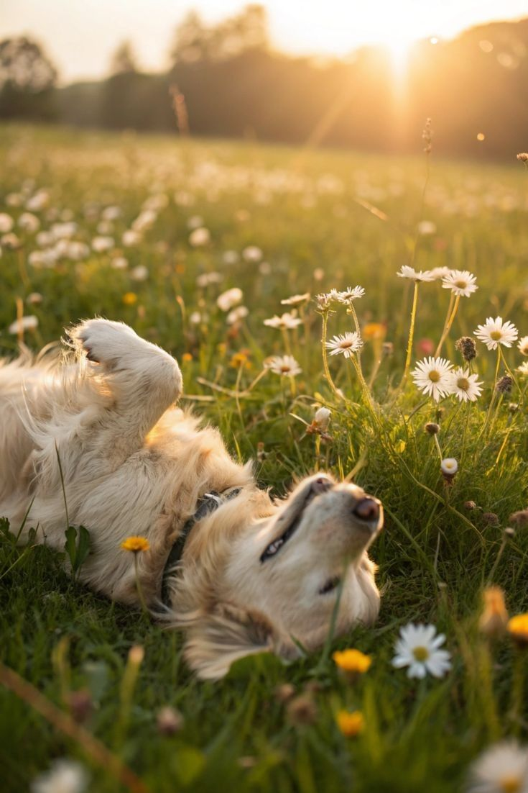

Conectando
ConectandoPatas
Conectando
Cada animal aqui é resgatado com carinho e atenção antes de encontrar seu novo lar.
Processo transparente, com acompanhamento antes, durante e depois da adoção.
Voluntários, protetores e adotantes unidos por uma mesma causa.
Conheça alguns dos animais que estão esperando por uma família. Talvez o seu novo melhor amigo esteja aqui.
Carregando animais...
“Um país pode ser analisado a partir do cuidado aos animais.”

Quando você adota, oferece mais do que um lar: oferece segurança, carinho e uma segunda chance para quem precisa de você.
O Conectando Patas é uma plataforma digital colaborativa criada para auxiliar no resgate, acolhimento e adoção responsável de animais abandonados.
A iniciativa busca conectar voluntários, protetores e adotantes, facilitando a divulgação de informações e tornando mais eficiente o apoio aos animais em situação de abandono.
Por meio da tecnologia, buscamos fortalecer a colaboração entre a comunidade e incentivar a conscientização sobre posse responsável, contribuindo para o bem-estar animal e oferecendo uma nova oportunidade para aqueles que precisam de um lar.